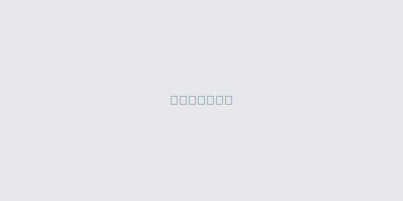

トップページ更新
カーソル下画像、リンクの編集
1 編集画面、サイドナビ「固定ページ」→「HOME」を編集
WordPress管理画面にログイン後、左側のメニューから「固定ページ」をクリックします。 固定ページ一覧から「HOME」を見つけて、 「編集」リンクをクリックしてください。 ※権限がない場合は管理者にお問い合わせください。
2 カーソル下画像をクリック
編集画面内で変更したい画像の上にカーソルを合わせ、 画像をクリックすると編集オプションが表示されます。 「画像を編集」または「置換」を選択して、新しい画像をアップロードしてください。 ※推奨画像サイズ: 1920×600px
注意: 画像のファイルサイズは2MB以下にしてください。大きすぎると表示が遅くなります。
3 リンクの編集
リンクを編集する場合は、テキストを選択してリンクボタンをクリックします。 URLを入力し、新しいタブで開く場合は「新しいタブで開く」にチェックを入れてください。